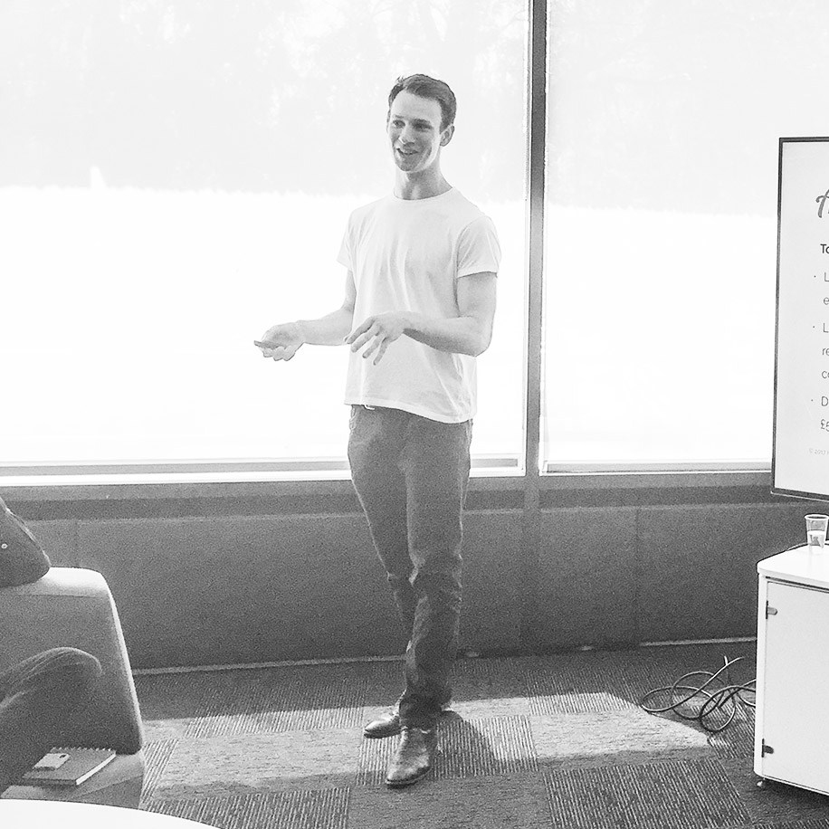
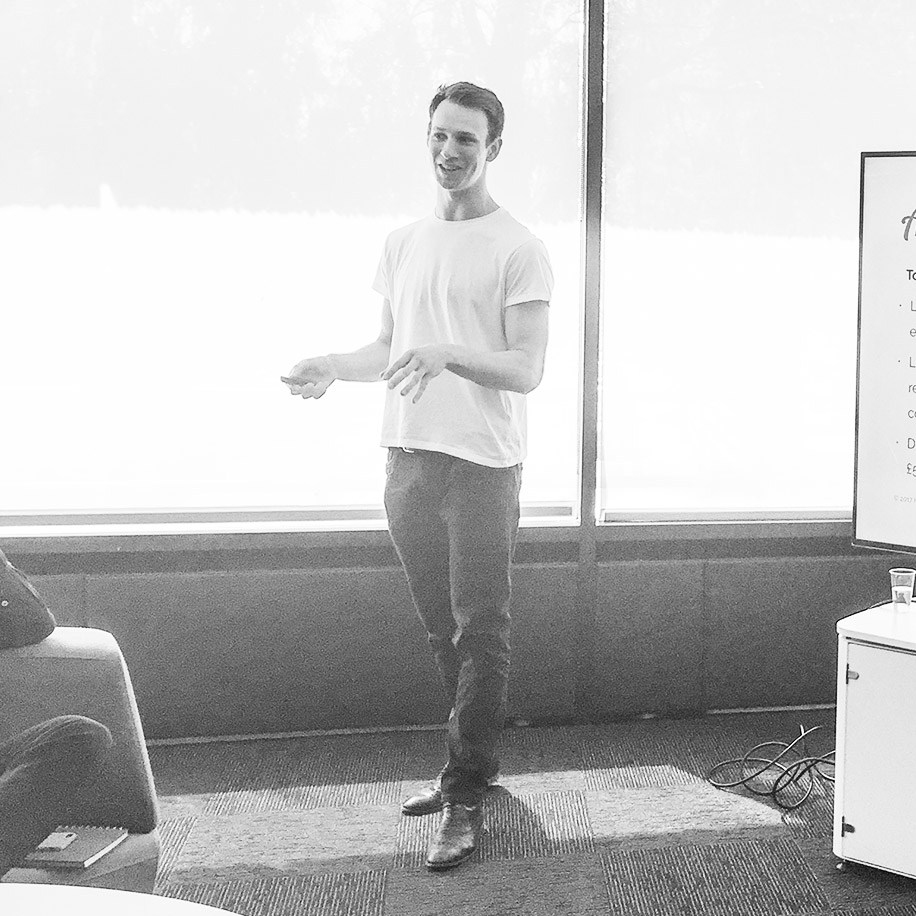

Hi! I’m Harry, a determined, enthusiastic and goal-driven designer who loves to impress.
To me, good design is about simplifying the highly complicated. I take pride from working on projects that users and stakeholders relish, my ambition is to continuously improve my abilities and repeatedly create immersive material that can be enjoyed by everyone.
I enjoy challenges and strive to build strong relationships with users through creating innovative, understandable and aesthetic solutions to problems. My passion is to deliver outstanding user interface applications by working with others effectively and combining best practices with raw creativity.

 

“Harry joined my team for his internship as a digital designer. I was impressed with his passion and enthusiasm about design and from day 1 it was clear how capable Harry is in producing fantastic looking presentations and UI designs. His knowledge of development compliments his designs too as he is able to explain ideas in a technical way to help developers. I enjoyed working with Harry and I wish him all the best in his future career!”

My work

The Pineapple website
Growing a brand online
Design, Photography & Development

IBM MySA Signature Moment
Promoting groundbreaking success
Design